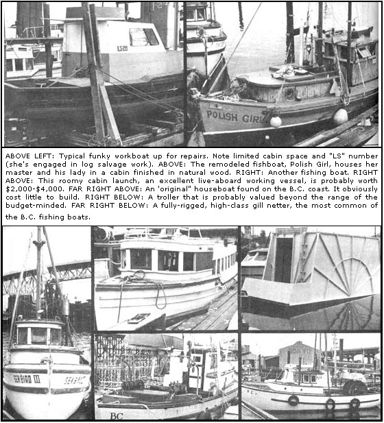

ABOVE LEFT: This new owner of a steel-hulled vessel is doing the ""elbow grease"" part of outfitting his prize. He can afford to invest a few bucks in the undertaking because he bought the boat for an outrageously low $100. ABOVE RIGHT: A 40-footer, beached and abandoned. Many a boat now in service has been resuced from such a position... but it's an iffy"" proposition. Owners of abandoned craft are often difficult to find, although some do turn up to reclaim their vessel after other unsuspecting sould have refloated and refurbished the boats! Even if you're guaranteed title to a wreck, the craft?like this one?may not be worth the great labor and whatever money it would take to restore it.